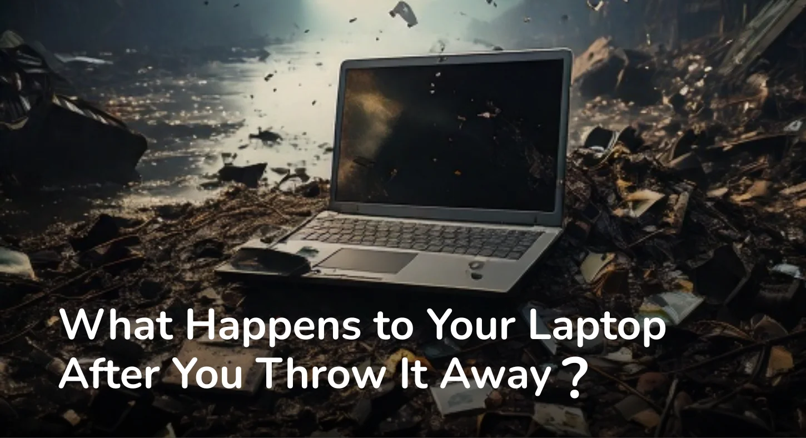

You upgraded. The new one is faster, sleeker, and does everything the old one could not. So you toss the old laptop into a drawer for a while, and then one day it quietly makes its way to the bin. Out of sight, out of mind.
But that laptop does not just disappear.
When an electronic device ends up in regular household waste, it gets collected with everything else and sent to a landfill. At the landfill, it sits under pressure, heat, and rain. The casing cracks. The battery leaks. The circuit board, which contains lead, mercury, cadmium, and arsenic, begins to break down and seep into the soil and groundwater around it.
These are not trace amounts. A single laptop battery contains enough toxic material to contaminate thousands of litres of groundwater. Multiply that by the millions of devices discarded every year and the scale of the problem becomes very hard to ignore.
In many parts of the world, discarded electronics find their way to informal recycling units. Workers, often without protective gear, manually break down devices to recover copper, gold, and other valuable metals. The process involves burning circuit boards, dissolving components in acid, and handling materials that cause serious long term health damage.
The people doing this work are exposed to neurotoxins daily. The communities around these sites carry the health burden for years. And all of this happens because the device was not disposed of responsibly in the first place.
This is where e2e comes in. Responsible e-waste management means your device is collected, transported, and processed through certified channels. The usable components are recovered safely. The hazardous materials are neutralised and disposed of in ways that meet environmental standards. Your data is wiped securely before anything else happens.
It is not complicated. It does not take much effort on your end. But the difference it makes is enormous.
Think about where the old device is going before you think about the new one. One responsible decision at the end of a device's life undoes a lot of the damage that would otherwise follow it. e2e makes that decision easy, because the only thing that should follow your laptop into retirement is peace of mind.